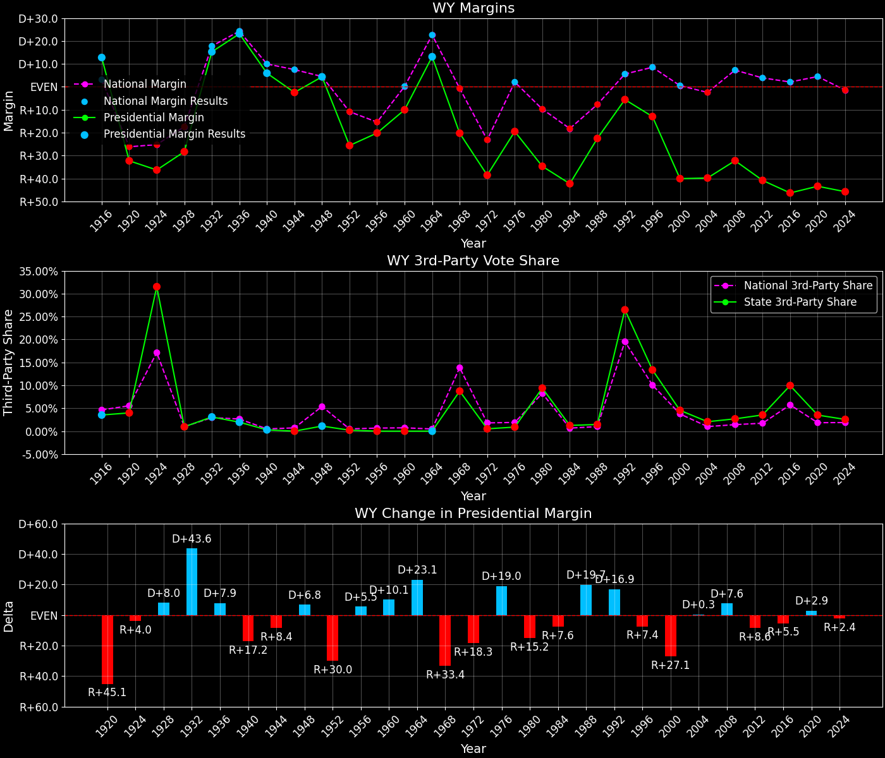
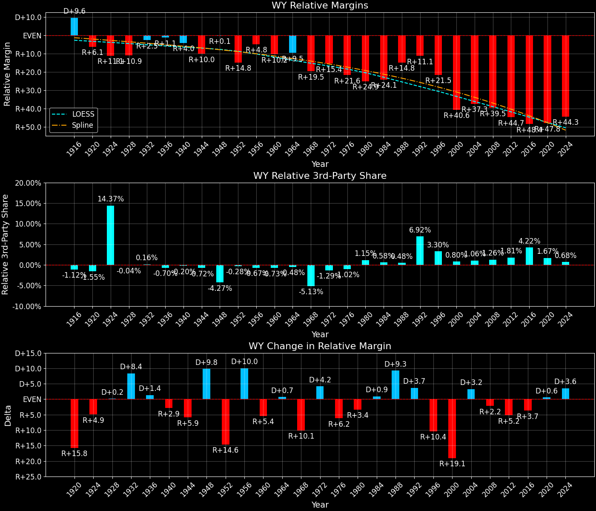

Wyoming (WY) — Statewide

Margins · 3rd-Party share · Pres. deltas

Relative margins · Relative 3rd-Party · Rel. deltas
Wyoming (WY) — Total Data
| Year | EVs | D | R | State Margin | Nat. Margin | Rel. Margin | Total votes |
|---|---|---|---|---|---|---|---|
| 1968 | 3 | 45,173(35.5%) | 70,927(55.8%) | R+20.2 | R+0.7 | R+19.5 | 127,205 |
| 1972 | 3 | 44,358(30.5%) | 100,464(69.0%) | R+38.5(Δ R+18.3) | R+23.1(Δ R+22.4) | R+15.4(Δ D+4.2) | 145,570 |
| 1976 | 3 | 62,239(39.8%) | 92,717(59.3%) | R+19.5(Δ D+19.0) | D+2.1(Δ D+25.2) | R+21.6(Δ R+6.2) | 156,343 |
| 1980 | 3 | 49,427(28.0%) | 110,700(62.6%) | R+34.7(Δ R+15.2) | R+9.7(Δ R+11.8) | R+24.9(Δ R+3.4) | 176,713 |
| 1984 | 3 | 53,370(28.2%) | 133,241(70.5%) | R+42.3(Δ R+7.6) | R+18.2(Δ R+8.5) | R+24.1(Δ D+0.9) | 188,968 |
| 1988 | 3 | 67,113(38.0%) | 106,867(60.5%) | R+22.5(Δ D+19.7) | R+7.7(Δ D+10.5) | R+14.8(Δ D+9.3) | 176,551 |
| 1992 | 3 | 68,160(34.0%) | 79,347(39.6%) | R+5.6(Δ D+16.9) | D+5.6(Δ D+13.3) | R+11.1(Δ D+3.7) | 200,587 |
| 1996 | 3 | 77,934(36.8%) | 105,388(49.8%) | R+13.0(Δ R+7.4) | D+8.5(Δ D+3.0) | R+21.5(Δ R+10.4) | 211,571 |
| 2000 | 3 | 60,481(27.7%) | 147,947(67.8%) | R+40.1(Δ R+27.1) | D+0.5(Δ R+8.0) | R+40.6(Δ R+19.1) | 218,351 |
| 2004 | 3 | 70,776(29.1%) | 167,629(68.9%) | R+39.8(Δ D+0.3) | R+2.5(Δ R+3.0) | R+37.3(Δ D+3.2) | 243,428 |
| 2008 | 3 | 82,868(32.5%) | 164,958(64.8%) | R+32.2(Δ D+7.6) | D+7.3(Δ D+9.7) | R+39.5(Δ R+2.2) | 254,658 |
| 2012 | 3 | 69,286(27.8%) | 170,962(68.6%) | R+40.8(Δ R+8.6) | D+3.9(Δ R+3.4) | R+44.7(Δ R+5.2) | 249,061 |
| 2016 | 3 | 55,973(21.9%) | 174,419(68.2%) | R+46.3(Δ R+5.5) | D+2.1(Δ R+1.8) | R+48.4(Δ R+3.7) | 255,849 |
| 2020 | 3 | 73,491(26.6%) | 193,559(69.9%) | R+43.4(Δ D+2.9) | D+4.5(Δ D+2.4) | R+47.8(Δ D+0.6) | 276,765 |
| 2024 | 3 | 69,527(25.8%) | 192,633(71.6%) | R+45.8(Δ R+2.4) | R+1.5(Δ R+5.9) | R+44.3(Δ D+3.6) | 269,048 |
Column explanations
- Δ
- Change (delta) in the value from the previous election year.
- Year
- Election year.
- EVs
- Number of electoral votes allocated to this state or unit.
- D
- Number of votes for the Democratic candidate (raw count(pct%)).
- R
- Number of votes for the Republican candidate (raw count(pct%)).
- State Margin
- Margin between the two major-party candidates, including third-party votes ((D - R)/total).
- Nat. Margin
- The national presidential margin for that year, including third-party votes ((D_total - R_total)/total_votes).
- Rel. Margin
- The presidential margin relative to the national presidential margin (Margin - Nat. Margin).
- Total votes
- Total voter turnout or ballots cast (when provided).
Wyoming (WY) — Third-Party Data
| Year | D | R | Other votes | State 3rd-Party Share | 3rd-Party Nat. Share | 3rd-Party Rel. Share |
|---|---|---|---|---|---|---|
| 1968 | 45,173(35.5%) | 70,927(55.8%) | 11,105(8.7%) | 8.73% | 13.86% | -5.13% |
| 1972 | 44,358(30.5%) | 100,464(69.0%) | 748(0.5%) | 0.51% | 1.80% | -1.29% |
| 1976 | 62,239(39.8%) | 92,717(59.3%) | 1,387(0.9%) | 0.89% | 1.90% | -1.02% |
| 1980 | 49,427(28.0%) | 110,700(62.6%) | 16,586(9.4%) | 9.39% | 8.24% | 1.15% |
| 1984 | 53,370(28.2%) | 133,241(70.5%) | 2,357(1.2%) | 1.25% | 0.67% | 0.58% |
| 1988 | 67,113(38.0%) | 106,867(60.5%) | 2,571(1.5%) | 1.46% | 0.98% | 0.48% |
| 1992 | 68,160(34.0%) | 79,347(39.6%) | 53,080(26.5%) | 26.46% | 19.55% | 6.92% |
| 1996 | 77,934(36.8%) | 105,388(49.8%) | 28,249(13.4%) | 13.35% | 10.05% | 3.30% |
| 2000 | 60,481(27.7%) | 147,947(67.8%) | 9,923(4.5%) | 4.54% | 3.75% | 0.80% |
| 2004 | 70,776(29.1%) | 167,629(68.9%) | 5,023(2.1%) | 2.06% | 1.00% | 1.06% |
| 2008 | 82,868(32.5%) | 164,958(64.8%) | 6,832(2.7%) | 2.68% | 1.42% | 1.26% |
| 2012 | 69,286(27.8%) | 170,962(68.6%) | 8,813(3.5%) | 3.54% | 1.73% | 1.81% |
| 2016 | 55,973(21.9%) | 174,419(68.2%) | 25,457(10.0%) | 9.95% | 5.73% | 4.22% |
| 2020 | 73,491(26.6%) | 193,559(69.9%) | 9,715(3.5%) | 3.51% | 1.84% | 1.67% |
| 2024 | 69,527(25.8%) | 192,633(71.6%) | 6,888(2.6%) | 2.56% | 1.88% | 0.68% |
Column explanations
- Year
- Election year.
- D
- Number of votes for the Democratic candidate (raw count(pct%)).
- R
- Number of votes for the Republican candidate (raw count(pct%)).
- Other votes
- Number of votes for third-party (other) candidates (raw count(pct%)).
- State 3rd-Party Share
- Share of the vote received by third-party (other) candidates.
- 3rd-Party Nat. Share
- The national third-party share for that year (3rd-Party votes / total votes).
- 3rd-Party Rel. Share
- Third-party share relative to the national third-party share (3rd-Party share - Nat. 3rd-Party share).

Two-party margins · relative · deltas
Wyoming (WY) — Two-Party Data
| Year | EVs | D | R | 2-Party Margin | 2-Party Nat. Margin | 2-Party Rel. Margin |
|---|---|---|---|---|---|---|
| 1968 | 3 | 45,173(38.9%) | 70,927(61.1%) | R+22.2 | R+0.8 | R+21.4 |
| 1972 | 3 | 44,358(30.6%) | 100,464(69.4%) | R+38.7(Δ R+16.6) | R+23.6(Δ R+22.8) | R+15.2(Δ D+6.2) |
| 1976 | 3 | 62,239(40.2%) | 92,717(59.8%) | R+19.7(Δ D+19.1) | D+2.1(Δ D+25.7) | R+21.8(Δ R+6.6) |
| 1980 | 3 | 49,427(30.9%) | 110,700(69.1%) | R+38.3(Δ R+18.6) | R+10.6(Δ R+12.7) | R+27.7(Δ R+5.9) |
| 1984 | 3 | 53,370(28.6%) | 133,241(71.4%) | R+42.8(Δ R+4.5) | R+18.3(Δ R+7.7) | R+24.5(Δ D+3.2) |
| 1988 | 3 | 67,113(38.6%) | 106,867(61.4%) | R+22.8(Δ D+20.0) | R+7.8(Δ D+10.5) | R+15.0(Δ D+9.4) |
| 1992 | 3 | 68,160(46.2%) | 79,347(53.8%) | R+7.6(Δ D+15.3) | D+6.9(Δ D+14.7) | R+14.5(Δ D+0.6) |
| 1996 | 3 | 77,934(42.5%) | 105,388(57.5%) | R+15.0(Δ R+7.4) | D+9.5(Δ D+2.6) | R+24.4(Δ R+10.0) |
| 2000 | 3 | 60,481(29.0%) | 147,947(71.0%) | R+42.0(Δ R+27.0) | D+0.5(Δ R+8.9) | R+42.5(Δ R+18.1) |
| 2004 | 3 | 70,776(29.7%) | 167,629(70.3%) | R+40.6(Δ D+1.3) | R+2.5(Δ R+3.0) | R+38.1(Δ D+4.4) |
| 2008 | 3 | 82,868(33.4%) | 164,958(66.6%) | R+33.1(Δ D+7.5) | D+7.4(Δ D+9.9) | R+40.5(Δ R+2.4) |
| 2012 | 3 | 69,286(28.8%) | 170,962(71.2%) | R+42.3(Δ R+9.2) | D+3.9(Δ R+3.4) | R+46.2(Δ R+5.7) |
| 2016 | 3 | 55,973(24.3%) | 174,419(75.7%) | R+51.4(Δ R+9.1) | D+2.2(Δ R+1.7) | R+53.6(Δ R+7.4) |
| 2020 | 3 | 73,491(27.5%) | 193,559(72.5%) | R+45.0(Δ D+6.4) | D+4.5(Δ D+2.3) | R+49.5(Δ D+4.1) |
| 2024 | 3 | 69,527(26.5%) | 192,633(73.5%) | R+47.0(Δ R+2.0) | R+1.5(Δ R+6.0) | R+45.5(Δ D+4.0) |
Column explanations
- Δ
- Change (delta) in the value from the previous election year.
- Year
- Election year.
- EVs
- Number of electoral votes allocated to this state or unit.
- D
- Number of votes for the Democratic candidate (raw count(pct%)).
- R
- Number of votes for the Republican candidate (raw count(pct%)).
- 2-Party Margin
- Margin between the two major-party candidates, ignoring third-party votes ((D - R)/(D + R)).
- 2-Party Nat. Margin
- The national presidential margin for that year, including third-party votes ((D_total - R_total)/total_votes).
- 2-Party Rel. Margin
- The presidential margin relative to the national presidential margin (Margin - Nat. Margin).